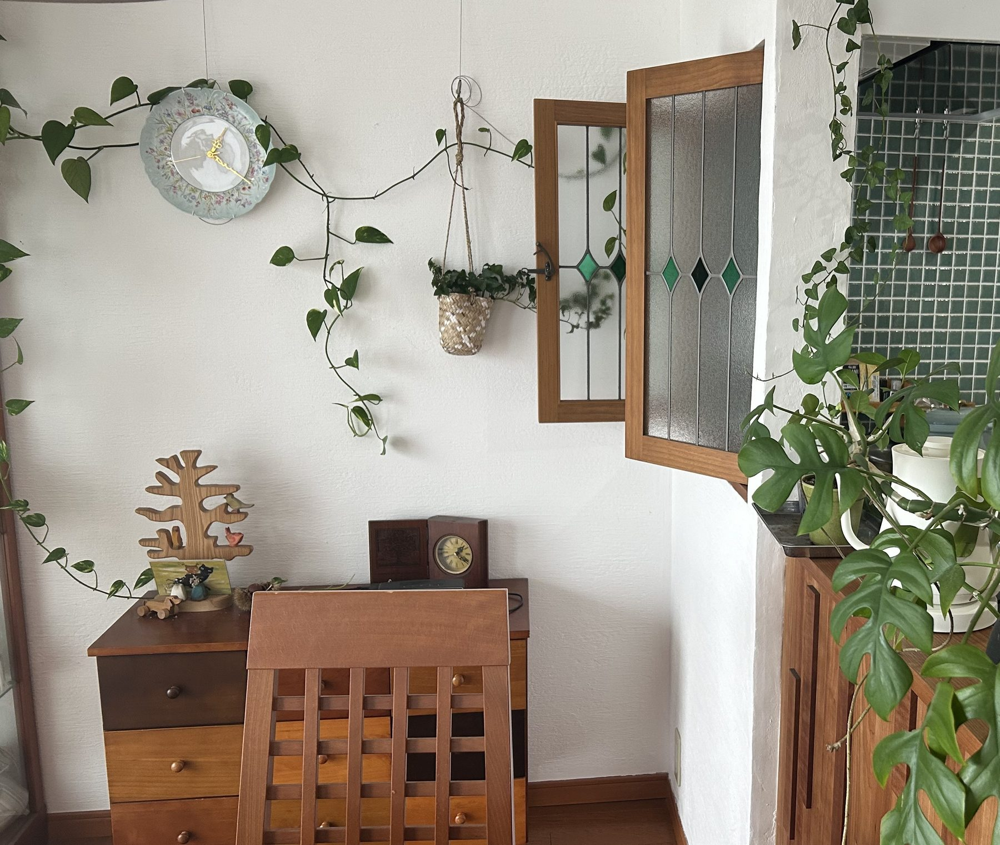
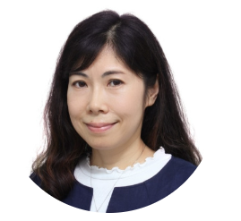

オンラインカウンセリング
心を、 本来の調和へ。
オンラインカウンセリングを通して、安心できる関係性を築きながら、
自分らしさを少しずつ取り戻していく。
そんな時間と場を、ともに育んでいきたいと思っています。

ここから、お話をうかがっています。
Concept
コンセプト
Loko Ponoロコ・ポノ
ハワイ語で、「内面（心や精神）が正しく調和している状態」
「穏やかで満たされた気持ち」を意味する言葉です。
森の中に差し込む木漏れ日のように。
深呼吸したくなる、静かであたたかい場所で。
あなたの心が本来の調和を取り戻していく時間を、ご一緒します。
ご提供しているサービス
（すべてオンライン）
-
01
グリーフケア
身近な人や存在を失った哀しみとともに生きること。その道のりに寄り添います。
-
02
スピリチュアルケア
生きる意味、死、生きづらさ、自分らしさなど、人生の根源的な問いに向き合います。
-
03
人生の転機の相談
これからをどう生きるか。大きな転機のなかにある生き方のご相談をお受けします。
必要に応じて、瞑想や坐禅など、頭で考えるだけではなく、
静かに自分自身と向き合う時間のご提案も可能です。
Worry
こんなお悩みは
ありませんか？
- 自死、病死、突然死、公認されない死別などで、深い喪失を抱えている
- 愛着や対人関係に課題を感じている
- 生きる意味や生きづらさ、消えてしまいたいような思いを抱えている
- 人生の転機のなかで、これからの生き方に迷っている
- 誰にも話せない思いを、安心して話せる場所が欲しい
Feature
カウンセリングの特徴
-
Feature01
『生と死』に関わる
10年以上の経験臨床スピリチュアルケア師として、生と死、喪失やかなしみに関わる相談に携わってきた経験を活かします。
-
Feature02
グリーフケアと
心理学的な視点死別をはじめ、人生の中で経験するさまざまな喪失や、生きづらさにも目を向けます。
-
Feature03
国家資格キャリア
コンサルタントの視点人生の再構築、自分らしく生きることを、ご一緒に整理していきます。
-
Feature04
オンラインだから
どこからでもご自宅など、ご自身の安心できる場所から相談できます。
Profile
カウンセラー紹介

カウンセラー
浅野 浩子
あさの ひろこ
お一人おひとりのライフスタイルに合わせた、
心のケアをお届けしたい。
遺族支援団体に所属し、多くの方の心の相談をお受けしています。お一人おひとりのライフスタイルに合わせた心のケアをお届けしたいという想いから、この個人相談室を立ち上げました。
人は、今まで生きてきた方法ではどうにも立ちゆかないほどのスピリチュアルペインを抱えたときに、もう一度自分に向き合います。自分らしさに還るとはどんなことなのか——生きづらさをやわらげるためのお手伝いができたらと思っています。
カウンセラーについて
思春期からスピリチュアルペインを感じたことをきっかけに、「生きる意味」に向き合ってきました。
育児・海外生活、そして大きな存在の喪失経験を経て——
大きな転機を迎えるたび、深く自分自身に立ち返り、内面と誠実に向き合うことで、本来の自分へと静かに還っていく。
人生に散りばめられたやさしさに気づき、そして感謝しながら、探求の旅は続いています。
国家資格キャリアコンサルタント
取得への想い
私にとってキャリアとは、仕事だけを意味するものではありません。
家族との関係性、社会での役割、自分の居場所など、これまで歩んできた人生を振り返りながら、これからどのように、何を大切に生きていくかを考えることだと思っています。
License資格
- 臨床スピリチュアルケア師（日本スピリチュアルケア学会）
- 国家資格 キャリアコンサルタント
- グリーフ専門士／ペットロス専門士／プロフェッショナル心理カウンセラー
- 上智大学 心理学科卒業
- 小学校児童英語教師資格
Career経験
- 遺族支援活動
- 自死遺族相談
- 緩和ケア病棟傾聴活動
- 身近な人をなくしたこどもたちのつどい
- 自死遺族のわかちあいの会のファシリテーター
- 瞑想リトリート企画・運営
- ミュージックベル演奏（教会、被災地、地域活動） など
静かに、
自分自身へ還る時間を。
Column & News
心を調える
「瞑想・坐禅」のご案内
カウンセリングで心を言葉にしたあとは、
静かに自分と向き合う時間をつくってみるのもおすすめです。
- 会場
- 甲斐国分寺 瞑想リトリート年2回開催
- 次回開催
- 2026年11月22日
／2027年4月・第1日曜午後（予定）
Menu & Price
メニュー・料金
-
はじめての方へ
初回 オンライン相談
3,500円
60分
-
継続 オンライン相談
5,000円
60分
Flowご予約の流れ
-
STEP1
ご希望の日時を選ぶ
予約ボタンから、ご希望の日時をお選びください。
-
STEP2
自動返信メールを確認
当日のオンライン相談用リンクなど、詳細をご連絡します。
-
STEP3
当日、お話しする
お時間になりましたら、リラックスしてご参加ください。
Reservation
まずは、
お話を聞かせてください。
話しはじめる言葉が見つからなくても大丈夫です。
沈黙も含めて、あなたのペースでご一緒します。
初回 60分 / 3,500円 ｜ オンライン（全国どこからでも）